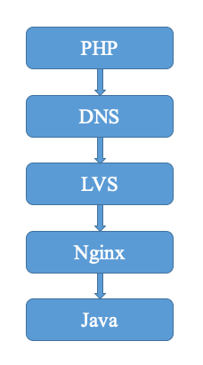
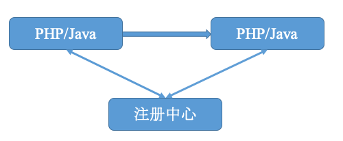
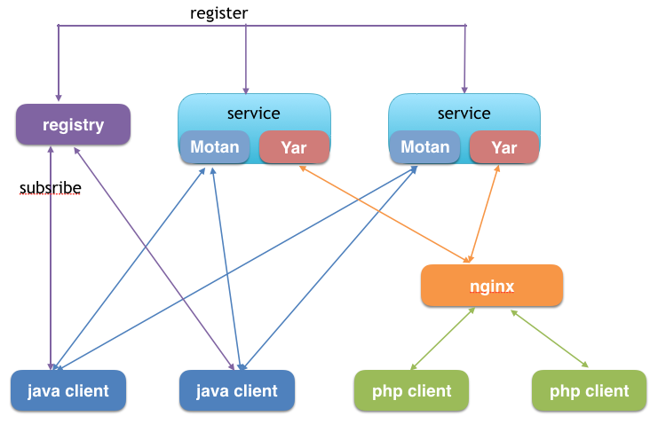
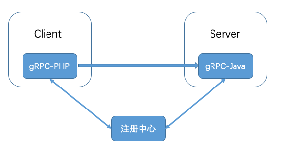
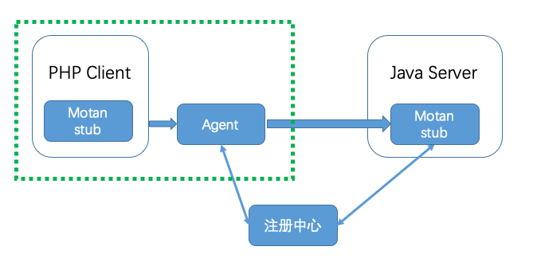
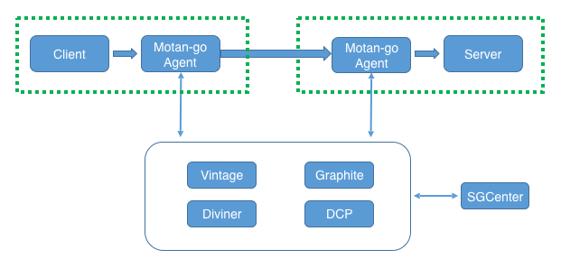

- 00 开篇词 微服务，从放弃到入门.md
- 01 到底什么是微服务？.md
- 02 从单体应用走向服务化.md
- 03 初探微服务架构.md
- 04 如何发布和引用服务？.md
- 05 如何注册和发现服务？.md
- 06 如何实现RPC远程服务调用？.md
- 07 如何监控微服务调用？.md
- 08 如何追踪微服务调用？.md
- 09 微服务治理的手段有哪些？.md
- 10 Dubbo框架里的微服务组件.md
- 11 服务发布和引用的实践.md
- 12 如何将注册中心落地？.md
- 13 开源服务注册中心如何选型？.md
- 14 开源RPC框架如何选型？.md
- 15 如何搭建一个可靠的监控系统？.md
- 16 如何搭建一套适合你的服务追踪系统？.md
- 17 如何识别服务节点是否存活？.md
- 18 如何使用负载均衡算法？.md
- 19 如何使用服务路由？.md
- 20 服务端出现故障时该如何应对？.md
- 21 服务调用失败时有哪些处理手段？.md
- 22 如何管理服务配置？.md
- 23 如何搭建微服务治理平台？.md
- 24 微服务架构该如何落地？.md
- 25 微服务为什么要容器化？.md
- 26 微服务容器化运维：镜像仓库和资源调度.md
- 27 微服务容器化运维：容器调度和服务编排.md
- 28 微服务容器化运维：微博容器运维平台DCP.md
- 29 微服务如何实现DevOps？.md
- 30 如何做好微服务容量规划？.md
- 31 微服务多机房部署实践.md
- 32 微服务混合云部署实践.md
- 33 下一代微服务架构Service Mesh.md
- 34 Istio：Service Mesh的代表产品.md
- 35 微博Service Mesh实践之路（上）.md
- 36 微博Service Mesh实践之路（下）.md
- 微博技术解密（上） 微博信息流是如何实现的？.md
- 微博技术解密（下）微博存储的那些事儿.md
- 结束语 微服务，从入门到精通.md
- 阿忠伯的特别放送 答疑解惑01.md
- 阿忠伯的特别放送 答疑解惑02.md
35 微博Service Mesh实践之路（上）
专栏上一期我们聊了Service Mesh的代表作Istio，由于Istio的设计理念非常新，并且它诞生在微服务容器化和Kubernetes云平台火爆之后，所以从设计和实现上，Istio都天生对云原生应用更友好。
但是现实是不是也是那么美好呢？对于一个已经上线运行多年的业务系统来说，要想从经典的微服务架构走上Istio这条看似完美的道路并不容易，各种内部基础设施的定制化以及业务稳定性优先准则等因素，都注定了大多数公司要走出一条自己的Service Mesh实践之路。今天我就来带你回顾下微博是如何一步步走向Service Mesh的。
跨语言服务调用的需求
我在前面讲过，微博的服务化框架采用的是自研的Motan，Motan诞生于2013年，出于微博平台业务单体化架构拆分为微服务改造的需求，在结合当时的开源服务化框架和自身实际的需求，选择了采用自研的方式。而且由于微博平台的业务采用的是Java语言开发，所以Motan早期只支持Java语言。后期随着微博业务的高速发展，越来越多的PHP业务开始登上舞台，于是在微博的流量体系中，主要是三股服务之间的相互调用：一个是Java与Java语言，一个是PHP和Java语言，一个是PHP和PHP语言。Java应用之间的调用采用的是Motan协议，而Java应用与PHP、PHP与PHP应用之间采用的都是HTTP协议。我回忆了一下当时一次PHP与Java之间的HTTP调用过程，大致需要经过DNS解析、四层LVS负载均衡、七层Nginx负载均衡，最后才能调用Java应用本身。

从上面这张图可以看出，一次HTTP调用的链路相当长，从我的实践来看，经常会遇到好几个问题。
第一个问题：中间链路损耗大。由于一次HTTP调用要经过DNS、LVS、Nginx这三个基础设施，每一层都会带来相应的损耗。我曾经在线上就碰到过因为DNS解析延迟、LVS带宽打满引起的网络延迟，以及Nginx本地磁盘写满引起的转发延迟等各种情况，造成接口响应在中间链路的损耗甚至超过了接口本身业务逻辑执行的时间。
第二个问题：全链路扩容难。由于微博业务经常要面临突发热点事件带来的流量冲击，所以需要能够随时随地动态扩缩容。其实在应用本身这一层扩容并不是难点，比较麻烦的是四七层负载均衡设备的动态扩缩容，它涉及如何评估容量、如何动态申请节点并及时修改生效等，要完成一次全链路扩容的话，复杂度非常高，所以最后往往采取的办法是给四七层负载均衡设备预备足够的冗余度，在峰值流量到来时，只扩容应用本身。
第三个问题：混合云部署难。专栏前面我讲过微博的业务目前采用的是混合云部署，也就是在内网私有云和公有云上都有业务部署，同样也需要部署四七层负载均衡设备，并且要支持公有云上的请求经过DNS解析后要能够转发到公有云上的负载均衡设备上去，避免跨专线访问带来不必要的网络延迟和专线带宽占用。
因此，迫切需要一种支持跨语言调用的服务化框架，使得跨语言应用之间的调用能够像Java应用之间的调用一样，不需要经过其他中间链路转发，做到直接交互，就像下图描述的那样。

Yar协议的初步尝试
为此，微博最开始考虑基于Motan框架进行扩展，使其支持PHP语言的Yar协议，下面是扩展后的架构图。这个架构的思路是PHP客户端的服务发现通过Nginx来支持，经过Nginx把PHP的Yar协议请求转发给服务端，由于Motan框架中了适配Yar协议，服务端会把PHP的Yar协议请求转换成Motan请求来处理，处理完后再转成Yar协议的返回值经过Nginx返回给客户端。

但这种架构主要存在两个问题。
第一个问题：Motan协议与Yar协议在基本数据结构和序列化方式的支持有所不同，需要经过复杂的协议转换。
第二个问题：服务调用还必须依赖Nginx，所以调用链路多了一层，在应用部署和扩容时都要考虑Nginx。
gRPC会是救命稻草吗
时间往后推演，gRPC横空出世，它良好的跨语言特性，以及高效的序列化格式的特性吸引了我们，于是便开始考虑在Motan中集成gRPC，来作为跨语言通信的协议。当时设计了下图的架构，这个架构的思路是利用gRPC来生成PHP语言的Client，然后在Motan框架中加入对gRPC协议的支持，这样的话PHP语言的Client就可以通过gRPC请求来调用Java服务。

但在我们的实际测试中，发现微博的业务场景并不适合gRPC协议，因为gRPC协议高度依赖PB序列化，而PHP对PB的兼容性不是很好，在微博的业务场景下一个接口返回值有可能超过几十KB，此时在PHP Client端PB数据结构解析成JSON对象的耗时甚至达到几十毫秒，这对业务来说是不可接受的。而且gRPC当时还不支持PHP作为Server对外提供服务，也不满足微博这部分业务场景的需要。
代理才是出路
考虑到PHP语言本身没有常驻内存控制的能力，在实现服务注册和发现以及其他各种服务框架功能时，仅靠PHP-FPM进程本身难以实现，因此需要一个统一常驻内存的进程来帮助完成服务框架的各种功能。一开始我们考虑过使用本地守护进程和OpenResty的Timer来实现服务发现，但其他服务框架的功能不太好实现，比如专栏前面提到的各种复杂的负载均衡策略、双发、熔断等。为此，我们希望通过一个Agent也就是代理，来帮助PHP进程来完成服务框架的各种功能，PHP进程本身只需要负责运行业务逻辑的代码，以及最简单的Motan协议解析。基于这个思路，当时我们设计了下面这个架构，它的思路就是在PHP进程的本地也部署一个Agent，PHP进程发出去的请求都经过Agent进行处理后，再发给对应的Java应用。

向Service Mesh迈进
2017年，就在我们开始采用Agent方案对业务进行改造，以支持PHP应用调用Java应用服务化的时候，Service Mesh的概念突然火热起来，并随着Istio的发布风靡业界。相信经过我前面对Service Mesh的讲解，你一定会发现这里的Agent不恰恰就是Service Mesh中的SideCar吗？没错，我们跨语言调用的解决方案竟然与Service Mesh的理念不谋而合。借鉴Service Mesh的思想，我们也对Agent方案进一步演化，不仅客户端的调用需要经过本地的Agent处理后再转发给服务端，服务端在处理前也需要经过本地的Agent，最后再由服务端业务逻辑处理，下面是它的架构图。如此一来，业务只需要进行集成最简单的Motan协议解析，而不需要关心其他服务框架功能，可以理解为业务只需要集成一个轻量级的Client用于Motan协议解析，而繁杂的服务框架功能全都由Agent来实现，从而实现业务与框架功能的解耦。

从上面的图中你可以看出，这个架构与上一期我们聊的Istio大体思路相同，但是区别还是很明显的，可以概括为以下几点：
都通过SideCar方式部署的代理来实现流量转发，Istio里使用的是Envoy，而Weibo Mesh采用的是自研的Motan-go Agent。这里有一个很明显的区别是，Weibo Mesh中业务代码还需要集成一个轻量级的Client，所以对业务有一定的倾入性；而Istio采用的是iptables技术，拦截网络请求给Envoy，所以业务无需做任何变更，更适合云原生应用。在微博的业务场景下，由于大部分业务并不是云原生应用，都是部署在物理机或者虚拟机集群之中的，所以需要根据自己的业务特点来决定SideCar的部署方式。而且Weibo Mesh中的轻量级Client除了实现基本的Motan协议的解析功能之外，还添加了一些业务需要的特性，比如为了防止Agent不可用，在本地保存了一份服务节点的本地快照，必要时Client可以访问本地快照获得节点的地址，直接向服务节点Server发起调用，而不需要经过Agent转发处理，只不过这个时候就丧失了Agent的服务治理功能。
Weibo Mesh和Istio都具备服务治理功能，只不过Istio是通过Control Plane来控制Proxy来实现，并且Control Plane包括三个组件Pilot、Mixer以及Citedar，三者各司其职。而Weibo Mesh是通过统一的服务治理中心来控制Agent，从而实现服务治理的。这是因为微博本身的各种基础设施大部分是自研的，比如注册和配置中心是自研的Vintage、监控系统是自己基于Graphite改造的、容器平台DCP以及负责容量评估的Diviner也是自研的，为此需要一个统一的地方把这些基础设施串联起来。而Istio好像就为开源而生，设计之初就要考虑如何更好地集成并支持各类开源方案，比如专门抽象出Mixer组件来对接各种监控和日志系统。
总结
今天我给你讲解了微博是如何一步步走向Service Mesh之路的，从这个过程你可以看出微博的Weibo Mesh并不是一开始就是设计成这样的，它是随着业务的发展，对跨语言服务调用的需求日趋强烈，才开始探索如何使得原有仅支持Java语言的服务化框架Motan支持多语言，在这个过程中又不断尝试了各种解决方案之后，才笃定了走Agent代理这条路，并实际应用到线上。而随着Service Mesh概念的兴起，微博所采用的Agent代理的解决方案与Service Mesh理念不谋而合，于是在Agent代理的方案中吸纳Service Mesh的思想，进一步演变成如今的Weibo Mesh。所以说一个可靠的架构从来都不是设计出来的，是逐步演进而来的。
思考题
如果要支持更多不同语言应用之间的相互调用，你觉得Weibo Mesh中的轻量级的Client需要做哪些工作？
欢迎你在留言区写下自己的思考，与我一起讨论。
© 2019 - 2023 Liangliang Lee. Powered by gin and hexo-theme-book.